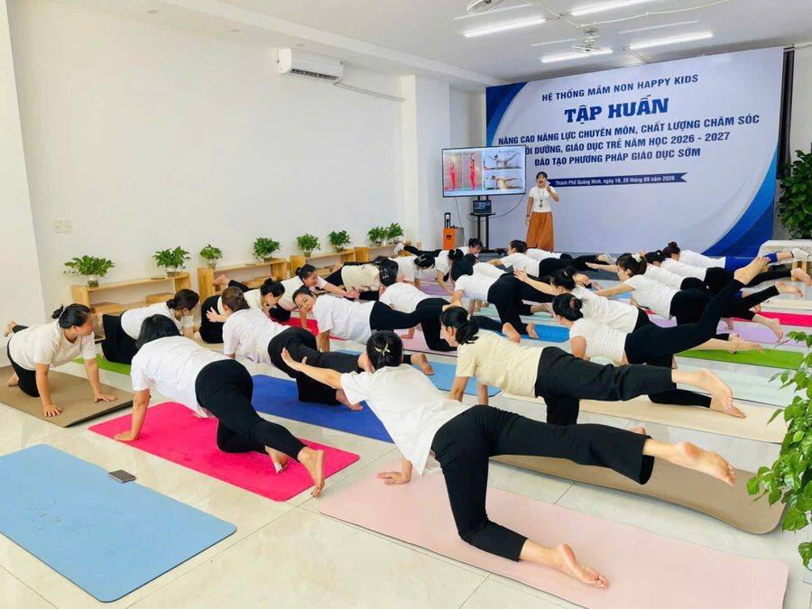

Yoga người lớn · Kiến thức cần biết khi tập yoga
Mục đích thực sự của việc tập yoga
Buổi học đầu tiên, câu cô hay nghe là: “Cô ơi, em cứng lắm, chắc em không tập được đâu.” Hoặc: “Bao lâu thì em xoạc được hả cô?”
Cô hiểu vì sao. Mở mạng ra là thấy yoga trong những tấm ảnh. Chân vắt qua đầu. Người cong như cánh cung. Đứng một chân giữa bãi biển.

Cô cũng có những tấm ảnh như thế. Nhưng cô muốn nói thật một điều. Đó không phải là đích đến.
Thế khó không phải là đích đến
Người tập yoga bị chấn thương thường không phải vì lười. Mà vì cố. Đau cổ vì trồng chuối đầu khi vai chưa đủ khỏe. Đau gối vì ép chân vào hoa sen. Đau lưng dưới vì gập người thật sâu theo một video trên mạng. Rất chăm. Chỉ là chăm sai hướng.
Cơ thể không phải đối thủ để thắng.
Một người có thể làm được những tư thế rất khó, mà trong lòng vẫn đầy lo, đầy giận. Ra khỏi thảm là vai lại co, hơi thở lại ngắn, đêm lại khó ngủ. Ngược lại, có người chưa bao giờ chạm được tay xuống sàn. Nhưng ngủ ngon hơn. Bớt cáu với con. Biết dừng lại thở khi mọi thứ rối lên. Với cô, người ấy đang tập yoga rất tốt.
Yogas citta vritti nirodhah.
Yoga là làm lắng xuống những xao động của tâm.
Yoga Sutra của Patanjali, câu 1.2
Câu định nghĩa yoga cổ nhất mà người học yoga nào cũng gặp. Không nhắc gì tới độ dẻo. Không nhắc tới thế khó. Chỉ nói về tâm.
Yoga là con đường quay vào bên trong
Tư thế, hơi thở, những phút nằm yên. Tất cả là cách để mình rời mắt khỏi thế giới bên ngoài một lúc, và nhìn vào trong. Bên trong có gì? Một cơ thể đang mỏi. Một nỗi lo chưa gọi được tên. Một hơi thở bị nín từ sáng tới giờ. Và sâu hơn nữa, một chỗ rất yên mà mình hay quên là nó vẫn ở đó.
Nhưng đi vào trong không có nghĩa là bỏ đời sống bên ngoài. Yoga không đòi mình lên núi. Nó diễn ra ngay trong bữa cơm, giấc ngủ, cách mình thở khi kẹt xe.
Vì thế, người tập yoga thực hành năm điểm. Năm điểm này đi cùng nhau, nuôi nhau, cho một sức khỏe toàn diện: thân khỏe, tâm an.
5 điểm của yoga cho sức khỏe toàn diện
- 1. Ăn uống đúng cách
- 2. Nghỉ ngơi đúng cách
- 3. Tập luyện đúng cách
- 4. Hít thở đúng cách
- 5. Tập trung và thiền định
1🍚 Ăn uống đúng cách
Yoga bắt đầu từ trong bếp. Nghe hơi lạ, nhưng thật.
Ăn đồ tươi, nấu đơn giản. Nhiều rau, ít đồ chiên rán, ít đồ ngọt. Ăn vừa đủ no, khoảng bảy tám phần thôi. Ăn chậm, nhai kỹ, và khi ăn thì chỉ ăn. Không vừa ăn vừa lướt điện thoại, vừa ăn vừa cãi nhau.
Cô không bắt ai phải ăn chay. Mỗi người một cơ thể, một hoàn cảnh. Nhưng cô để ý: ăn nhẹ hơn thì người nhẹ hơn, đầu cũng trong hơn.
Ở lớp, cô hay thấy: Học viên tới lớp buổi tối sau một bữa no thường thở rất khó, cúi người là thấy nặng bụng. Cô hay nhắc: tập cách bữa chính khoảng hai đến ba tiếng. Đói quá thì uống ít nước ấm hoặc ăn vài miếng trái cây.
Thử ngay hôm nay: Bữa tối nay, đặt đũa xuống giữa mỗi miếng. Ăn chậm hơn một nửa so với mọi ngày.
2🌙 Nghỉ ngơi đúng cách
Nhiều người nghĩ nghỉ là lười. Cô thì nghĩ nghỉ cũng là một bài tập. Có khi là bài khó nhất.
Ngủ đủ, đi ngủ sớm một chút. Trong ngày, cho mình vài phút dừng hẳn. Và trong buổi tập có Savasana, tư thế nằm thư giãn cuối buổi. Nằm yên. Không làm gì cả. Để cơ thể tự sắp xếp lại sau những gì vừa tập.
Nghỉ đúng cách cũng không phải nằm lướt điện thoại hai tiếng. Mắt vẫn làm việc, đầu vẫn chạy. Như thế chưa phải nghỉ.
Ở lớp, cô hay thấy: Savasana là lúc học viên hay muốn bỏ về sớm nhất. “Nằm thôi mà cô.” Nhưng cũng chính lúc ấy, cô thấy vai người ta hạ xuống, hàm lỏng ra, có người ngủ thiếp đi vài phút. Cô để yên. Có lẽ đó là giấc ngủ sâu nhất của họ trong tuần.
Thử ngay hôm nay: Tối nay, trước khi ngủ, nằm ngửa năm phút. Thả từng phần cơ thể từ chân lên đầu. Rồi mới cầm điện thoại, nếu vẫn còn muốn.
3🧘♀️ Tập luyện đúng cách
Đây là phần mọi người biết nhiều nhất: các tư thế, asana. Nhưng chữ quan trọng là đúng cách.
Đúng cách là tập vừa sức của hôm nay. Khởi động trước, thả lỏng sau. Giữ hơi thở đều trong từng tư thế. Thấy đau nhói thì dừng. Căng cơ một chút thì được, còn đau ở khớp, ở cột sống thì không.
Trong Yoga Sutra, Patanjali chỉ dặn về tư thế một câu rất ngắn: sthira sukham asanam. Tư thế là vững vàng và dễ chịu. Vững, mà dễ chịu. Không có chữ nào nói phải sâu hơn người bên cạnh.
Ở lớp, cô hay thấy: Lỗi cô gặp nhiều nhất ở lớp người lớn không phải là tập sai một động tác. Mà là tập để so. Nhìn sang thảm bên cạnh rồi cố xuống thấp hơn, cố giữ lâu hơn. Gối khóa cứng, vai nhô lên sát tai, mặt nhăn lại, hơi thở tắc. Lúc ấy cô chỉ nhắc một câu: “Thở trước đã.”
Thử ngay hôm nay: Lần tới vào một tư thế, lùi lại khoảng hai phần mười so với mức sâu nhất mình làm được. Ở đó, và thở.
Đọc thêm: 10 nguyên tắc định tuyến cơ bản khi tập yoga.
4🌬️ Hít thở đúng cách
Mình thở cả ngày mà gần như không biết mình đang thở.
Thở đúng cách là thở bằng mũi. Thở xuống bụng, để bụng phồng lên khi hít vào, xẹp xuống khi thở ra. Thở ra dài hơn hít vào một chút. Chỉ cần vậy, cơ thể đã hiểu là mình đang an toàn, có thể dịu xuống.
Khi lo, khi giận, hơi thở lên cao, ngắn và nhanh. Đổi được hơi thở thì tâm cũng đổi theo. Đây là cánh cửa dễ mở nhất để đi vào bên trong.
Ở lớp, cô hay thấy: Rất nhiều người, kể cả người tập lâu năm, nín thở khi vào tư thế khó. Cô hay đứng gần và nghe. Chỗ nào hơi thở dừng, chỗ ấy là mình đang cố quá.
Thử ngay hôm nay: Đặt một tay lên bụng. Hít vào đếm 4, thở ra đếm 6. Làm mười hơi, ngay chỗ mình đang ngồi đọc bài này.
Đọc thêm: Hơi thở bốn thì và Phép thở Kapalabhati.
5🪷 Tập trung và thiền định
Điểm thứ năm là nơi bốn điểm kia dẫn tới. Quay vào bên trong.
Bắt đầu chỉ là vài phút ngồi yên mỗi ngày. Lưng thẳng, vai mềm, mắt nhắm hờ, theo dõi hơi thở vào ra. Tâm trôi đi đâu đó, nhận ra, rồi nhẹ nhàng đưa về. Trôi đi một trăm lần thì đưa về một trăm lần. Không trách mình.
Nhưng thiền không dừng ở cái gối ngồi. Rửa bát thì biết mình đang rửa bát. Nắm tay con đi học thì cảm nhận bàn tay nhỏ trong tay mình. Nghe chồng kể chuyện thì nghe thật, không vừa nghe vừa nghĩ việc khác. Sống tỉnh thức từng phút giây là như thế. Rất đời thường.
Ở lớp, cô hay thấy: Cuối buổi, sau Savasana, cô cho cả lớp ngồi dậy và ngồi yên thêm vài phút. Phòng tập im hẳn. Không ai nói, không ai nhìn ai. Với cô, đó là lúc lớp học đẹp nhất. Không có tư thế nào cả.
Thử ngay hôm nay: Sáng mai, trước khi cầm điện thoại, ngồi yên ba phút. Chỉ thở và biết mình đang thở.
Đọc thêm: Giới và luật trong yoga, phần yoga ngoài tấm thảm · Các trường phái yoga trên thế giới.

Năm điểm này từ đâu mà có?
Năm điểm cô chia sẻ ở trên là những gì cô tự thực hành và dạy cho học viên nhiều năm nay. Nó gần với năm nguyên tắc của truyền thống Sivananda, do Swami Vishnudevananda, học trò của thầy Sivananda, tóm gọn lại khi mang yoga sang phương Tây. Cô để ở đây để ai muốn tìm hiểu thêm thì có chỗ đối chiếu.
| 5 điểm cô chia sẻ | 5 nguyên tắc Sivananda |
|---|---|
| Ăn uống đúng cách | Chế độ ăn đúng (thanh đạm, chay) |
| Nghỉ ngơi đúng cách | Thư giãn đúng (Savasana) |
| Tập luyện đúng cách | Vận động đúng (Asana) |
| Hít thở đúng cách | Thở đúng (Pranayama) |
| Tập trung và thiền định | Suy nghĩ tích cực và thiền định (Vedanta, Dhyana) |
Tên gọi có khác đôi chút. Ý thì như nhau. Muốn xem năm điểm này qua hình ảnh một cỗ xe, kèm 8 lưu ý khi tập, đọc tiếp bài 5 điểm chính và 8 lưu ý trên con đường tập yoga.
Đó là yoga thực sự

Từ khóa 200 giờ đầu tiên năm 2017 tới khóa 500 giờ năm nay, càng học, càng dạy nhiều, cô càng thấy những thứ quý nhất mà yoga cho mình lại rất lặng lẽ. Ngủ ngon. Ăn biết đủ. Thở chậm lại được khi muốn nổi nóng. Ngồi yên được với chính mình mà không thấy sợ.
Không cần dẻo. Không cần giỏi. Chỉ cần bắt đầu.
Ăn uống đúng cách. Nghỉ ngơi đúng cách. Tập luyện đúng cách. Hít thở đúng cách. Tập trung, thiền định, và sống trọn vẹn, tỉnh thức từng phút giây. Đó là yoga thực sự.
🌿 Muốn tập yoga theo cách nhẹ nhàng và an toàn cùng cô?
Ở các lớp người lớn, cô dạy đủ cả năm điểm: tư thế vừa sức, hơi thở, thư giãn, và những phút ngồi yên cuối buổi. Có lớp online qua Zoom, có lớp kèm 1 kèm 1 (500.000đ / giờ) đi theo cơ thể và mục tiêu riêng của từng người.